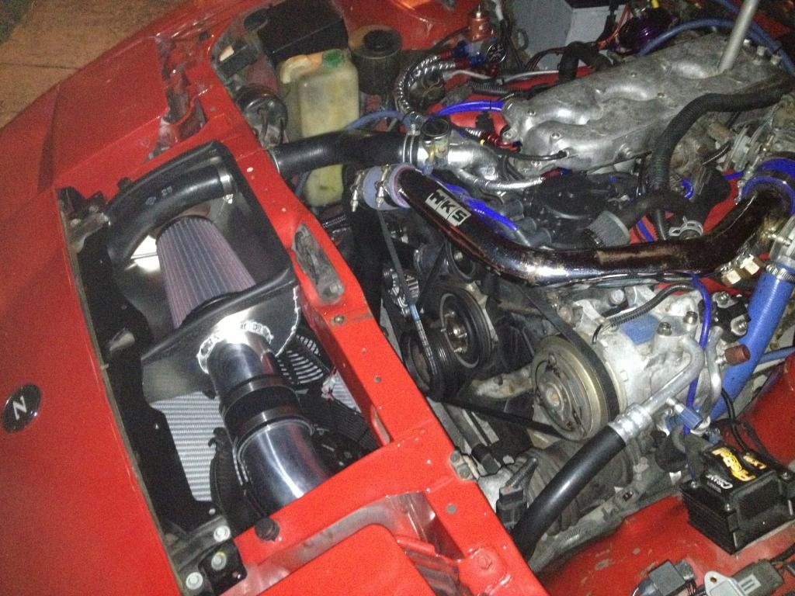

-
I have to ask why you would mount it on the opposite side of the metered air piping? why not near the stock location so you can easily draw from the intake piping?Damn dirty angels....these cars!
Current Daily Driver - 86 Turbo.
Under the cover - THE BANANA… that needs to be re-energized.
sigpic -
It won't fit in the stock z31 location. Right now it's not electrically hooked up and has 2 rubber plugs on the inlet. I need to connect the hose to the back port. (The one on the left with the black cap on it.)
20150215_160523.jpg
All I have to do is run a hose from the I/C pipe before the throttle body around the back of the engine to the Z32 idle valve. I already have some fittings welded to the intercooler pipe.Shiro #443

-
similar to the old AAC valve I guess, fix up a hard pipe, and run it with a 1/8" too, for that vacuum hose there too.Damn dirty angels....these cars!
Current Daily Driver - 86 Turbo.
Under the cover - THE BANANA… that needs to be re-energized.
sigpic -
Excited to see your results Rick…but I'm curious where you've read somewhere the Z32 MAF maxes at 500? I made 545 on a Z31 MAF and it still had room to go. I've seen upwards of 700+ on a Z32 MAF.545 RWHP & 540 RWTQOriginally posted by Andrew84zx
tell her your car is so fast it will make her panties fly off

-
I see conflicting results but usually in the 500's. I'm sure that the 700+ must have been with a Selin MAF translator that effectively doubles the MAF capacity on a dual intake Z32.Originally posted by FlawleZ View Post
So to avoid maxing out the Z32 MAF and problems with reversion when you use a recirculating BOV, I'm just going with a PMAS HPX N-1 MAF.
Like the one in the new Nistune videos
https://www.youtube.com/watch?v=xVMJte7UOdA
https://www.youtube.com/watch?v=9HbmYcZj-bgShiro #443
-
go with the setup I used to have bro....Originally posted by Rick88ss View Post
It's a combo of what les and you are saying…
It's open in the front and it also has a hole in the side that draws from factory CAI location…
you should also move it off center as there is a hood seam that runs right down the middle of this area and /I used it to form a seal around the airbox so that when the hood is closed, it only draws external cold(er) air

(look at my old ass HKS Intercooler from 1989 lol)
but back on topic, your fuel system is trick as hell, I can't wait to see how flex fuel works -
I get what you are saying but I'd try and do it on the other side.... because you have that hot radiator hose right there.http://z31performance.com/showthread…2-2-(-now-NA2T
My build thread (: -
there's really not that much heat radiating from that small hose. I considered that initially and I held my hand near it at operating temp and you really couldn't feel much heat, certainly not enough to outweigh the cold air from the factory hole…but I suppose I could wrap the hose with heat shielding like I did with fuel lines…great tip!Originally posted by les_joey_paul
(sorry for the threadjack Rick!) -
Yeah a few degree makes a difference it would only make more radiant heat at a stop. Me being in Florida that hose gets HOT with engine warmed up. I'm going to have to investigate further how the headlight bucket ducts into the intake area.http://z31performance.com/showthread…2-2-(-now-NA2T
My build thread (: -
I feel ya…Rick and I are both in MiamiOriginally posted by les_joey_paul View Post
-
I'm gonna get it done in about 2 weeks. Waiting for income tax return.Shiro #443
-
Ohhhhhh nice. Are you guys going to the auto combine meet on the 15th?
Also I think I might try creating a duct on the driver side headlight similar to yours boosted300.http://z31performance.com/showthread…2-2-(-now-NA2T
My build thread (: -
Ive been using that MAF for awhile with nistune and it works good.
Why the change from running microtech to nistune? I bought a haltech to go the opposite direction"produce first.talk second." -
I want the flex fuel setup. Also I want a more stock like running car when idling and with the A/C running. It seems like the Microtech is better for racing and cars without A/C. It does work with the ac but not smooth. No flex fuel with Microtech and support suxOriginally posted by ShamWow View PostShiro #443
-
Update:
Finally got around to getting the air filter heat shield made. Also had a 1.5" tube welded on before the turbo inlet to recirculate the BOV since I'm using a HPX N1 MAF before the turbo.
I still need to paint the heat shield and make a hole in the side to direct some cold air in from the passenger side headlight bucket.
Shiro #443

Copyright © 2006–. All rights reserved. Privacy Policy